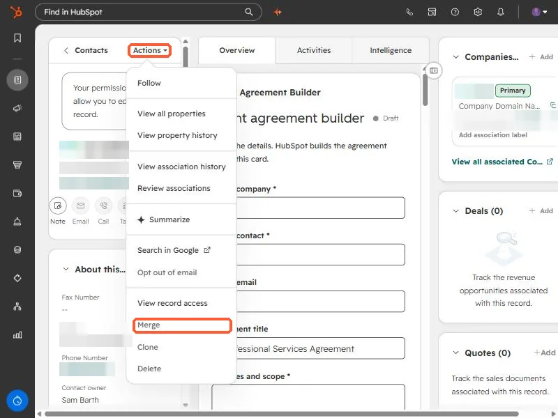

Short answer
The CRM API creates whatever you send, and companies created through the API are not deduplicated by domain. I proved it on November 15, 2026: two POSTs with the same domain made two companies, and a search right after found neither for several seconds. Use batch upsert on email or a unique property instead of search-then-create. If duplicates already exist, the merge endpoint combines them, but note what my test showed: the merged record came back with a new record ID, and both old IDs now resolve to it.
1. Why scripts create duplicates
- Companies created through the API skip the domain check that imports and manual creation apply.
- A script that retries after a timeout, or runs in more than one phase, sends the same record twice.
- A search-then-create script searches, finds nothing because new records take a moment to appear in search, and creates a second copy.
My test, on my developer test portal:
| Step | Result |
|---|---|
| POST two companies with the same name and domain | Both returned 201 with different IDs |
| Search by that domain immediately | 0 results |
| Search again about 2 seconds later | 0 results |
| Search again about 7 seconds after creation | 2 results |
So a script that creates a record and checks for it a second later will believe it does not exist. HubSpot's search docs note that new and updated records can take a few moments to appear. See the search API limits.
2. Upsert instead of search-then-create
POST /crm/v3/objects/{object}/batch/upsert creates or updates records by a unique value in one call. Each input names the idProperty, the value, and the properties to set:
POST https://api.hubapi.com/crm/v3/objects/contacts/batch/upsert
{
"inputs": [
{ "idProperty": "email", "id": "person@example.com", "properties": { "firstname": "Run0" } }
]
}I ran the same upsert twice with the same email. The first returned "new": true, the second "new": false with the same record ID and the updated first name. No search, no race.
- Contacts can use
emailas theidProperty. - Companies and other objects need a property set to require unique values, for example an ERP account number. See unique value properties.
- A batch counts as one call against the burst limit.
POST https://api.hubapi.com/crm/v3/objects/companies/batch/upsert
{
"inputs": [
{ "idProperty": "erp_account_number", "id": "100245", "properties": { "name": "Example Co", "city": "Austin" } }
]
}3. Merge duplicates through the API
For many duplicates, call the merge endpoint instead of merging by hand from the record's Actions menu:


POST https://api.hubapi.com/crm/v3/objects/companies/merge
{
"primaryObjectId": "PRIMARY_ID",
"objectIdToMerge": "DUPLICATE_ID"
}Contacts use the same body at /crm/v3/objects/contacts/merge. What I saw when merging my two test companies:
- The response returned a third, new ID, not the primary's.
- A GET on either old ID returned the record under the new ID.
- The new record's
hs_merged_object_idsproperty listed both old IDs.
So if your own system stores HubSpot IDs, update them from the merge response, or look up hs_merged_object_ids. Old IDs still resolve, but code that compares IDs will not match. Merges cannot be undone. Write the pairs to a file and review a sample first. See duplicates and merging. I deleted the test records afterwards.
4. Search by name
To find companies whose name contains a word, use CONTAINS_TOKEN with a * wildcard:
POST https://api.hubapi.com/crm/v3/objects/companies/search
{
"filterGroups": [
{ "filters": [ { "propertyName": "name", "operator": "CONTAINS_TOKEN", "value": "acme*" } ] }
]
}A free-text query searches each object's default searchable properties; for companies that includes name, domain, website and phone. Queries max out at 3,000 characters and return at most 10,000 results. Name matching is a poor dedupe key: use it to review candidates, not to decide merges.
5. A safe pattern for import scripts
- Upsert on email or a unique property instead of creating.
- Log every ID your script creates, so a rerun reads them instead of creating again.
- Compare record totals after each batch. If the count is higher than expected, stop before the next batch.
- Never rely on a search right after a create.
6. What is changing for 2027
- Dated versions. Batch upsert, merge and search all have date-based versions alongside v3. Move scripts to them before v4 and the 2025-09 versions lose support in March 2027. See API versioning.
- Service keys for scripts. New one-account scripts use service keys now that legacy private app creation is off in production. See service keys.
Common questions
Why did my script create two companies with the same domain?
Companies created through the API are not deduplicated by domain. Use batch upsert on a unique property.
My search did not find a record I just created.
New records take a few seconds to appear in search. In my test it was several seconds.
Does the merged record keep the primary's ID?
In my test it did not: the merge returned a new ID, and both old IDs resolved to it.
Can I upsert companies by domain?
Upsert needs a property that requires unique values. Domain is not set up that way by default, so use a custom unique property.